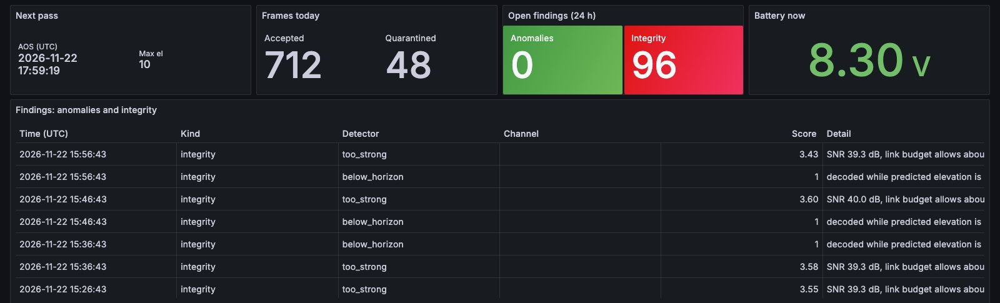
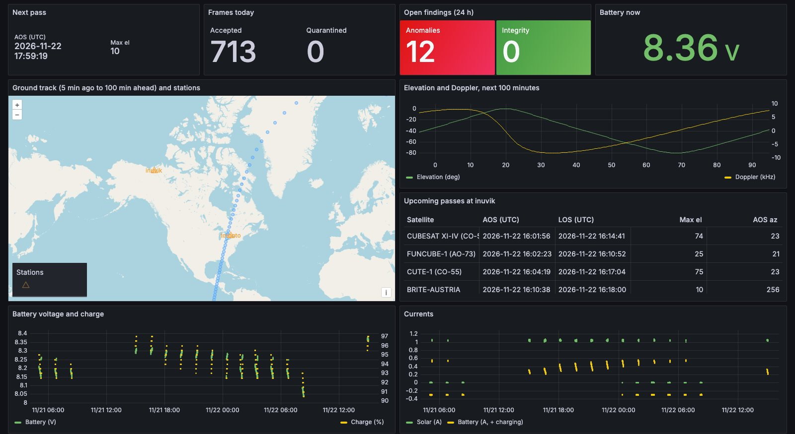

AVEDLEK Testbed: a Northern Satellite Ground Station
A satellite ground station shaped by National Defence's Project AVEDLEK Northern Groundstation: it predicts passes from public orbital data, receives and decodes satellite telemetry (from a simulated satellite, a real radio and the SatNOGS network), stores it in TimescaleDB, finds anomalies with machine learning, and checks every frame for spoofing.
Overview
The AVEDLEK Testbed is a working, bench-scale satellite ground station built around the public description of National Defence's Project AVEDLEK Northern Groundstation. The software runs today: it loads 157 real satellites from public orbital data, tracks 60 of them, receives a simulated satellite through a full software radio, stores and analyses its telemetry, and catches forged frames. The physical receive station is the next step.
AVEDLEK ("Our North, Strong and Free") is listed in the Defence Capabilities Blueprint with a funding range of $1 billion to $4.99 billion. It will build a satellite ground station in the far north of Canada, with allies, that integrates into and contributes to the United States overhead space architecture, using Canada's northern geography to advance space-based intelligence, surveillance and reconnaissance (SB-ISR).
This build works on the open, civilian parts of that problem with public data and amateur equipment: predicting passes, receiving and decoding telemetry, keeping a trusted record of it, spotting when a satellite is in trouble, and spotting when a frame did not come from the satellite at all. It also measures, with real orbits, the reason the project goes north: polar-orbiting satellites pass over the high Arctic far more often.
Everything is in a public repository: github.com/TYFSADIK/avedlek-groundstation, with five Python services, a GNU Radio receive chain, 43 automated tests, the evaluation tool behind every number on this page, and a step-by-step guide for the physical station.
The DND Project
The facts below come from the public AVEDLEK entry in the Defence Capabilities Blueprint, managed by the Directorate of Capability Integration at National Defence.
| Item | Public detail |
|---|---|
| Project | Project AVEDLEK Northern Groundstation ("Our North, Strong and Free"), new project |
| Objective | Deliver, in collaboration with allies, a satellite ground station in the furthest northern region of Canada |
| Requirement | A ground station in Northern Canada (location to be determined) that integrates into and contributes to the US overhead space architecture, using northern geography to advance the allied space-based ISR mission |
| Funding range | $1 billion to $4.99 billion |
| Start of options analysis | 2027/2028 |
| Start of definition and implementation | 2032/2033 |
| Initial delivery | 2035/2036 |
| Final delivery | 2036/2037 |
| Capability area | Air |
| Investment area | Aerospace structures and components |
| Key industrial capabilities | Defence systems integration; electro-optical/infrared systems; space systems |
Target Design
A real northern ground station is antennas, secure links and classified mission systems. A personal build cannot and should not touch those. What it can do is practise the ground segment's everyday engineering, end to end, on public signals:
| Ground station job | Testbed component | Design requirement |
|---|---|---|
| Know where every satellite is | Orbit service: CelesTrak TLEs, Skyfield, SGP4 | Passes for 48 hours at every station, ground tracks and Doppler every 30 seconds, TLEs refreshed every 6 hours |
| Point and tune | Tracker service, Hamlib | During a pass, antenna azimuth and elevation and the Doppler-corrected frequency once a second |
| Receive and demodulate | RTL-SDR, GNU Radio, Direwolf, software radio | Doppler correction, a 15 kHz channel, FM and 1200 baud AFSK, frames accepted only with a good CRC |
| Decode telemetry | Decoder service, beacon formats in YAML | AX.25 and KISS from any source; each satellite's beacon layout, scaling and limits in one file |
| Keep a trusted record | PostgreSQL + TimescaleDB | Every frame kept with its SHA-256 and radio metadata; telemetry compressed after 7 days and rolled up hourly |
| Notice trouble | Analytics service, scikit-learn | Four detectors trained on normal data, zero false alarms on normal runs, every fault found at the first contact after it starts |
| Trust the downlink | Integrity checks | Forged or replayed frames quarantined before they reach the telemetry, using physics a ground transmitter cannot fake |
| Show it | Grafana | Ground track, next passes, telemetry, link quality and findings on one screen |
| Use northern geography | Site comparison and station layouts | Contact time and time-to-detect measured for southern and northern sites with the same satellites |
What the Build Proves
- The full ground segment, not one piece of it: orbit prediction, antenna control, demodulation, decoding, storage, analytics and display, joined by one data model.
- Real signal processing: every simulated frame is modulated, shifted by Doppler, buried in noise and demodulated. Without Doppler correction the receiver fails, exactly as a real one does.
- Machine learning that earns its keep: the models found all five fault types in every run, with no false alarms on normal data.
- Security for the downlink: forged and replayed frames were caught every time, and a forged "dying battery" never set off a battery alarm.
- Why the North, in numbers: the same weather satellites pass over Inuvik 1.8 times as often as Toronto, and a northern station finds faults hours sooner.
Architecture
The design follows the classic ground station chain, with three ways for frames to arrive. Whatever the source, the decoder adds what the orbit says should be true about the frame, so a frame from a real radio, from SatNOGS or from the simulator gets the same checks.
The Physical Station
The physical part is a small receive-only station for amateur CubeSats on 435 to 438 MHz, about $250 CAD of parts. It needs no licence because it never transmits.
| Item | Example | About (CAD) | Why |
|---|---|---|---|
| SDR receiver | RTL-SDR Blog V4 with its dipole kit | 85 | Covers the satellite bands; its bias-tee powers the LNA through the coax |
| Computer at the antenna | Raspberry Pi 5, 4 GB, supply, 64 GB card | 140 | Runs the SatNOGS client, or Gqrx and Direwolf |
| Low-noise amplifier | Nooelec LaNA | 45 | At the antenna, to make up for coax loss |
| Coax, mast, weatherproofing | 3-5 m RG-58 or LMR-240, PVC mast, self-amalgamating tape | 60 | Short run, antenna clear of the roof, dry connectors |
| Surge protection | Coax arrestor bonded to the building ground | 30 | Any outdoor antenna |
| Optional: Yagi and rotator | Arrow II 146/437, SatNOGS rotator v3 | 400-500 | 8 to 10 dB more signal, pointed by the tracker service |
Building the antenna
- Pull each telescopic arm of the dipole kit out to 16.5 cm for 437 MHz (53.4 cm for 137 MHz weather satellites), measured from the centre of the mount.
- Open the arms to 120 degrees and mount the antenna horizontally, with the V opening along the north-south line, at least 1 m above the roof and away from metal.
- Put the LNA in a small weatherproof box at the antenna: antenna to LNA input, LNA output to the coax.
- Seal every outdoor connector with self-amalgamating tape, leave a drip loop, and bond the coax arrestor to the building ground.
- On the Pi:
sudo apt install rtl-sdr, blacklist the DVB driver, thenrtl_test -tandrtl_biast -b 1to power the LNA.
From there, the easiest route is to register the station on the SatNOGS network, which
schedules passes, corrects Doppler and uploads every decoded frame;
tools/satnogs_import.py pulls those frames into this ground station. The
hands-on route is Gqrx and Direwolf, with this project's tracker service retuning Gqrx for
Doppler once a second.
The Software Radio
The virtual station is not a random-number generator. It flies a simulated CubeSat, AVD-SAT (550 km sun-synchronous orbit, 437.5 MHz, 1200 baud AX.25), with a power, thermal and attitude model, and receives every beacon through a full radio chain written in NumPy:
| Measured with the software radio | Frames decoded |
|---|---|
| 15 dB SNR, no frequency offset | 10 of 10 |
| 4 dB SNR, below the FM threshold | 0 to 1 of 10 |
| 9 kHz Doppler, not corrected | 0 of 10 |
| 9 kHz Doppler, corrected with a 300 Hz prediction error | 10 of 10 |
| A whole 66 degree pass recorded as an IQ file, Doppler corrected | 59 frames |
| The same pass, not corrected | 10 frames, only near the top of the pass |
The link budget (0 dBW from the satellite, free-space loss at the slant range, a V-dipole
with an LNA) gives about 15 dB of SNR overhead and about 9 dB near the horizon, so low passes
lose frames the way real ones do. gnuradio/export_iq.py writes any simulated
pass as an IQ file, and gnuradio/doppler_rx.py, a GNU Radio flowgraph, receives
it (or a live RTL-SDR) with Doppler correction for Direwolf or gr-satellites.
Anomaly Detection
Telemetry changes all the time: the battery charges in sunlight and drains in eclipse, the panels swing from +55 C to -45 C every orbit. Fixed limits only catch a satellite that is already in trouble. The analytics service learns what normal looks like from the first day of data and uses four detectors:
| Detector | How it works | Catches |
|---|---|---|
| Limits | Red limits from the satellite's beacon format | Values already out of range |
| Context | Robust z-score per channel, learned separately for sunlight, eclipse and a nearly full battery | A value that is normal in sunlight but wrong in eclipse |
| Relation | Each channel predicted from all the others by least squares; a large residual means they no longer agree | A battery whose voltage no longer matches its charge and current |
| Isolation Forest | scikit-learn model over all channels at once | Combinations no single channel shows |
| Events and trend | Reboot counting, and a line fitted to the minimum battery voltage of each pass | Reboot loops, and days left before the battery reaches its red limit |
A finding is raised only after three flagged samples in a row for the same detector and channel, and the message says why: for example "batt_v=8.057, typical in eclipse 8.172 (z=-7.8)". The simulator can break the satellite in five ways: a failed solar string, a weak battery cell, a heater stuck on, a tumble after an attitude-control failure, and a flight-computer reboot loop. The faults change the physics, not the numbers directly, so the detectors see the knock-on effects a real failure would cause.
Spoofing Checks
Most small-satellite downlinks are not authenticated. Anyone with a transmitter near a ground station can replay old beacons or forge new ones, and a forged "battery dying" beacon could push an operator into a harmful decision. The decoder checks every frame against physics that a ground transmitter cannot easily fake:

Why the North
Weather and Earth-observation satellites fly polar and sun-synchronous orbits, which cross
the high Arctic on almost every revolution. tools/compare_sites.py measures what
that means with current orbits from CelesTrak:
| Site | Latitude | Passes per satellite per day | Passes per day, all 40 | Longest gap with no satellite |
|---|---|---|---|---|
| Toronto | 43.8 N | 4.69 | 187.5 | 0.5 h |
| Ottawa | 45.4 N | 4.72 | 189.0 | 1.1 h |
| Iqaluit | 63.7 N | 7.41 | 296.5 | 0.4 h |
| Inuvik | 68.4 N | 8.32 | 333.0 | 0.2 h |
| Alert | 82.5 N | 11.72 | 469.0 | 0.1 h |
More passes means more chances to hear a satellite, and that sets how fast a problem can be noticed. The next section measures exactly that.
Results in Simulation
tools/evaluate.py trains the models on 48 hours of normal telemetry for each
station layout, then breaks the satellite at six different times of day and runs 24 hours
past each one, with every frame through the full software radio. Spoofing runs last 72
hours with the forger starting after 24. These are simulation results, labelled as such;
real-satellite results come after the physical build.
| Fault (mean / worst hours to detect) | Toronto | Ottawa | Inuvik | Alert |
|---|---|---|---|---|
| Solar string fails | 4.7 / 10.9 | 4.7 / 10.8 | 3.4 / 9.9 | 0.7 / 1.1 |
| Weak battery cell | 3.1 / 6.9 | 4.7 / 10.8 | 1.7 / 5.9 | 0.6 / 1.1 |
| Heater stuck on | 3.1 / 6.9 | 4.7 / 10.8 | 1.7 / 5.9 | 0.6 / 1.1 |
| Tumble (attitude control fails) | 3.1 / 6.9 | 4.7 / 10.8 | 1.7 / 5.9 | 0.6 / 1.1 |
| Flight computer reboot loop | 3.3 / 7.2 | 4.7 / 10.8 | 1.8 / 6.0 | 0.7 / 1.1 |
| Passes per day | 6 | 5 | 10 | 15 |
| Longest gap between contacts | 9.9 h | 11.4 h | 9.6 h | 1.5 h |
| False alarms per day | 0 | 0 | 0 | 0 |
| Spoofing run | Forged or replayed frames decoded | Caught | Reached the telemetry | Real frames wrongly quarantined |
|---|---|---|---|---|
| Toronto, replay | 284 | 284 | 0 | 0 |
| Toronto, forgery | 284 | 284 | 0 | 0 |
| Ottawa, replay | 285 | 285 | 0 | 0 |
| Ottawa, forgery | 285 | 285 | 0 | 0 |
| Inuvik, replay | 282 | 282 | 0 | 0 |
| Inuvik, forgery | 282 | 282 | 0 | 0 |
| Alert, replay | 274 | 274 | 0 | 0 |
| Alert, forgery | 274 | 274 | 0 | 0 |
The Dashboard

- Next pass, frames today, open findings, battery now: the four things an operator checks first.
- Ground track and stations: where the satellite is and where it goes in the next 100 minutes.
- Elevation and Doppler ahead: when the next contact starts and how far the radio must retune.
- Upcoming passes: every tracked satellite, real and simulated, at the chosen station.
- Battery, currents, temperatures, attitude rates: the telemetry, from accepted frames only.
- Measured against expected SNR, frames per hour by station: link health, and the quickest way to see a spoofer (far too strong) or a dead antenna (no frames).
- Findings: anomalies and integrity checks with their reasons.
How to Build It
The software runs on any computer with Docker; the station adds a few hours of physical
work. Full instructions are in the docs/ folder of the
repository.
Step 1: The virtual ground station (15 minutes)
git clone https://github.com/TYFSADIK/avedlek-groundstation
cd avedlek-groundstation
./setup.sh # random passwords, builds the image
docker compose up -d # Grafana on http://localhost:3000Within two minutes the simulator back-fills a day of passes over Inuvik and Toronto, the models train, and the dashboard fills.
Step 2: Break the satellite, or spoof it
# in station.env
SIM_SCENARIO=battery_cell_fault # or solar_degraded, heater_stuck_on, adcs_tumble,
SIM_FAULT_AT=+30m # obc_reboot_loop, spoof_replay, spoof_forge
docker compose up -d simulatorStep 3: The physical station (half a day)
- Build and mount the V-dipole with the LNA, as in The Physical Station.
- Set up the Pi with the RTL-SDR drivers and power the LNA.
- Add your station to
station.env:STATIONS=inuvik,toronto,home=43.76:-79.41:190. - Register it on the SatNOGS network and install the SatNOGS client, or run Gqrx and Direwolf with
KISS_SOURCESand the tracker.
Step 4: Real frames in
SATNOGS_DB_TOKEN=... python3 tools/satnogs_import.py --norad <id> --observer <my station>
docker compose --profile hardware up -d tracker # Gqrx + Direwolf route
python3 tools/doppler_table.py --tle-file sat.tle --station home=43.76:-79.41:190Step 5: Measure
python3 -m pytest -q # 43 tests
python3 tools/evaluate.py --rf --starts 6 # the results on this page
python3 tools/compare_sites.py --celestrak weather --days 2What Is in the Code
| Part | What it does |
|---|---|
groundstation/orbit.py | Skyfield and SGP4: passes, look angles, range rate, ground track; sunlight from a solar-position formula and a cylindrical shadow |
groundstation/ax25.py | AX.25 frames, CRC-16/X.25, HDLC bit stuffing, NRZI, streaming KISS |
groundstation/modem.py | AFSK modulator and demodulator, FM with Doppler, noise, channel filter, SNR estimate, link budget |
groundstation/spacecraft.py, sim.py | AVD-SAT's power, thermal and attitude model, five faults, virtual stations, the spoofer |
groundstation/anomaly.py, integrity.py, pipeline.py | Four detectors with persistence, battery trend, five integrity checks, de-duplication and quarantine; shared by the services and the evaluation |
services/ | orbit, simulator, decoder (HTTP and KISS input), analytics, tracker (Hamlib) |
stacks/ | TimescaleDB schema with hypertables, compression and an hourly roll-up; Grafana provisioning and the 14-panel dashboard |
gnuradio/ | GNU Radio Doppler receiver, IQ export, gr-satellites SatYAML, Direwolf configuration |
tools/ | Evaluation, site comparison, Doppler table, SatNOGS and KISS import, dashboard builder |
tests/ | 43 tests: CRC reference vector, modem with and without Doppler correction, orbits, beacon formats, every fault and spoofing scenario, Hamlib tracking against a fake rotator |
Running the stack in Docker for real found one bug the unit tests could not: the analytics container could not write its trained model, because the model volume was created owned by root. The image now creates the directory for the service user. The first evaluation also showed false alarms that came from the test, not the satellite: the simulated battery started cold, and a full battery stops charging in sunlight, which the training data had not covered. The spacecraft model now warms up before recording, the charger tapers near full charge, and the context detector learns a "battery full" state, which brought false alarms to zero.
Spec-Gap and Status Table
"Running" means it works end to end in Docker on my machine. "Measured" numbers so far come from simulation and real public orbits; nothing is measured on a real satellite signal yet.
| Capability | Design intent | Status |
|---|---|---|
| Orbit prediction | Passes and tracks for every tracked satellite and station | Running: 157 satellites loaded, 60 tracked, 1,728 passes predicted for two stations over 48 h |
| Virtual ground station | Physics, software radio, faults and spoofer | Running |
| Telemetry decoding and storage | Any source, YAML formats, TimescaleDB | Running |
| Anomaly detection | Four detectors, persistence, trend | Measured in simulation |
| Spoofing checks | Five physics checks, quarantine | Measured in simulation |
| Site comparison | Contact by latitude with real orbits | Measured (CelesTrak orbits) |
| Dashboard | Track, passes, telemetry, link, findings | Running |
| GNU Radio receiver | Doppler-corrected receive chain | Code ready, needs a GNU Radio install to run |
| Physical station | V-dipole, LNA, RTL-SDR, Pi | Parts list ready, build next |
| Real satellite frames | SatNOGS import and own decodes | Next |
| Antenna tracking | Hamlib rotator and radio control | Tested against a fake rotator; real rotator optional |
Safety and Legal Notes
Frequently Asked Questions
What is Project AVEDLEK?
Project AVEDLEK Northern Groundstation ("Our North, Strong and Free") is a National Defence project in the Defence Capabilities Blueprint. It will deliver, with allies, a satellite ground station in the furthest northern region of Canada that integrates into and contributes to the US overhead space architecture, using northern geography to advance space-based intelligence, surveillance and reconnaissance. The listed funding range is $1 billion to $4.99 billion, with options analysis from 2027/2028 and final delivery in 2036/2037.
Is this build part of Project AVEDLEK?
No. It is an independent, personal research build that uses only the public project description, public orbital data and amateur-satellite signals. It is not affiliated with, funded by, or submitted to DND, the CAF or any allied programme.
What does the testbed actually do?
It predicts satellite passes from CelesTrak orbits with Skyfield, receives telemetry from a simulated CubeSat through a full software radio (and from a real RTL-SDR or the SatNOGS network), decodes AX.25 beacons, stores everything in TimescaleDB, finds anomalies with four detectors including an Isolation Forest, checks every frame for spoofing, and shows it all in Grafana.
Why put a ground station in the far north?
Polar and sun-synchronous satellites cross the high Arctic on almost every orbit. With current orbits of 40 weather satellites, each one passed over Inuvik 8.3 times a day against 4.7 times over Toronto, and 11.7 times over Alert. In simulation, a northern station also noticed satellite faults much sooner, because it hears the satellite more often.
How does it detect spoofed telemetry?
Each frame is checked against what the orbit says must be true: the satellite must be above the horizon, the carrier must carry the predicted Doppler shift, the signal cannot be much stronger than the link budget allows, and the beacon counter and on-board clock must move forward with ground time. A frame that fails is kept as evidence but kept out of the telemetry, so a forged alarm cannot cause a false one.
Is anything measured yet?
Yes, in simulation and with real public orbits: detection times, false alarms, spoofing catch rates and contact by site are on this page, from the evaluation tool in the repository. Nothing is measured on a real satellite signal yet; that comes after the physical station is built.
What Happens Next
- Next: build the V-dipole station, register it on SatNOGS, and import its first real frames.
- Then: beacon formats for two or three active amateur satellites, so the anomaly models run on real telemetry, and a comparison of my Toronto station with northern SatNOGS stations for the same satellites.
- Later: a Yagi and rotator driven by the tracker service, and a 9600 baud GMSK path.
- Project timeline: AVEDLEK's options analysis starts in 2027/2028, so this is long-lead skill building in ground segment engineering, signal processing and space cybersecurity.
Cite This Page
Citation formats
Plain text
Taki Sadik, "AVEDLEK Testbed: a Northern Satellite Ground Station", TYFSADIK, https://tyfsadik.org/work/defence/avedlek-northern-groundstation (accessed 2026-11-22).BibTeX
@misc{sadik-avedlek-testbed,
author = {Sadik, MD. Taki Yasir Faraji},
title = {AVEDLEK Testbed: a Northern Satellite Ground Station},
year = {2026},
url = {https://tyfsadik.org/work/defence/avedlek-northern-groundstation},
urldate = {2026-11-22}
}APA
Sadik, M. T. Y. F. (2026). AVEDLEK Testbed: a Northern Satellite Ground Station. TYFSADIK. https://tyfsadik.org/work/defence/avedlek-northern-groundstation